Aug 28 2006
BIGBANG vol.1
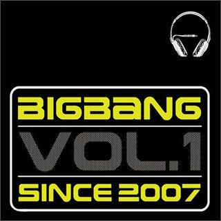
Their debut studio album, introducing their hip-hop/R&B style. It didn’t explode immediately but laid the groundwork for their later success.
Aug 16 2007
Always
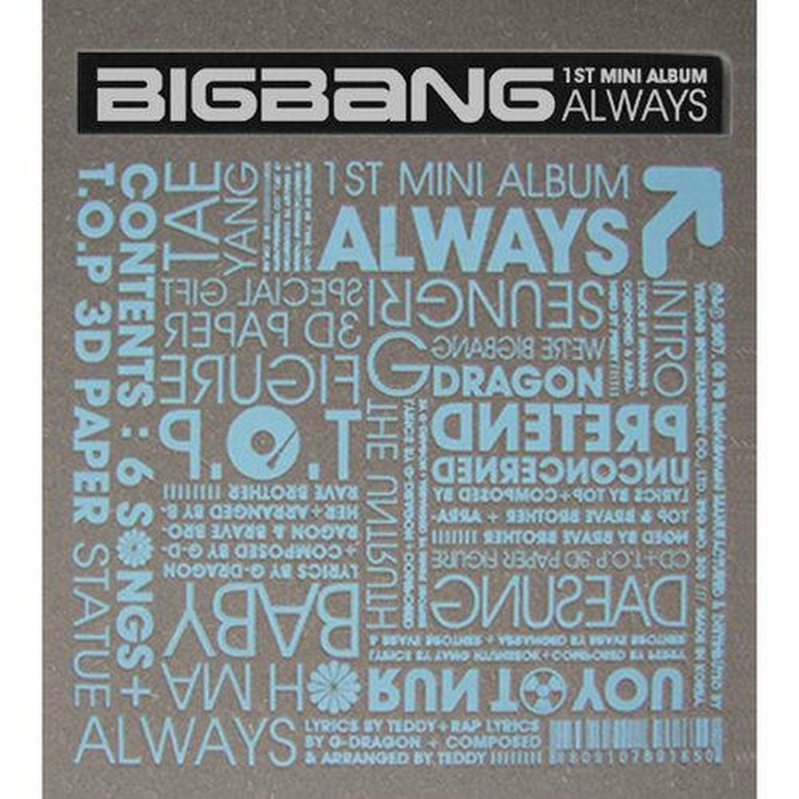
Breakthrough release featuring Lies, one of the most influential K-pop songs ever, shifting them into mainstream stardom.
Nov 22 2007
Hot Issue
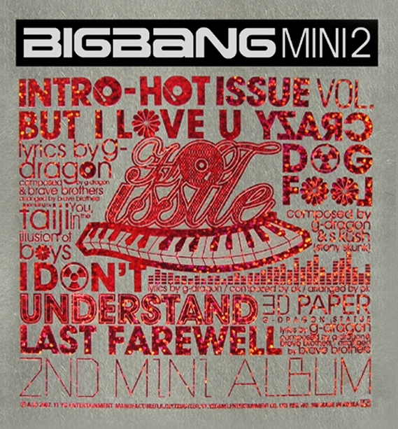
Continued momentum with hits like Last Farewell, reinforcing their reputation for self-produced music.
Aug 8 2008
Stand up
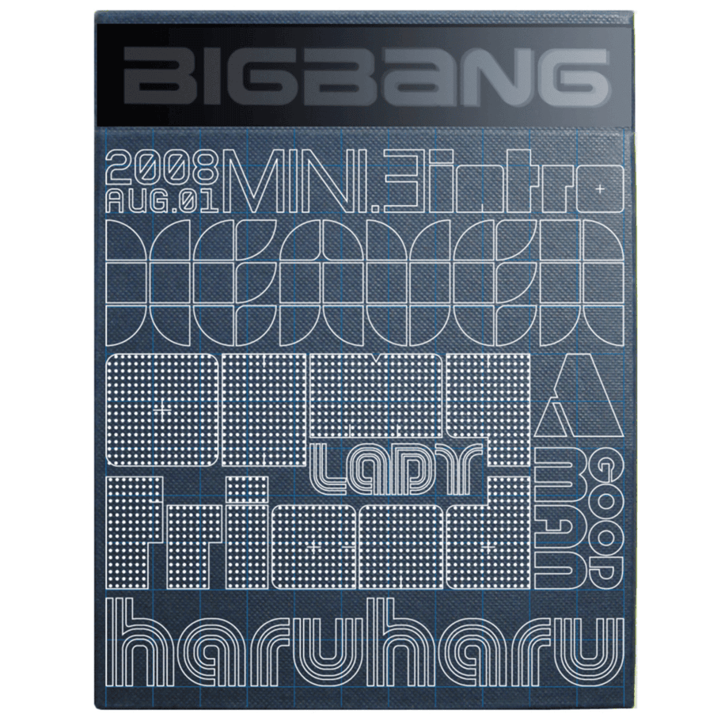
A polished EP led by Haru Haru, blending emotional storytelling with electronic and hip-hop elements.
Oct 22 2008
Number 1
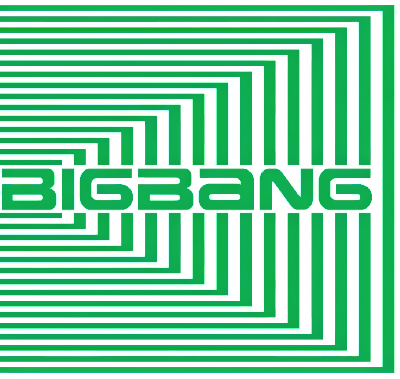
Their first full Japanese album, re-recording Korean hits in Japanese and marking their expansion into Japan.
Nov 8 2008
Remember
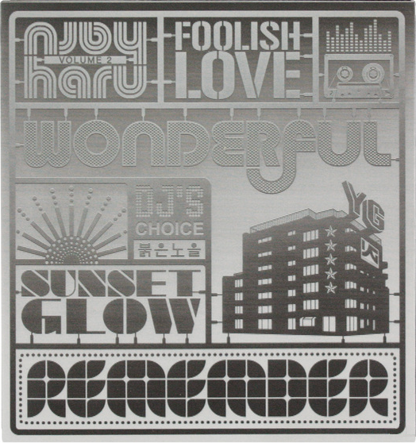
A more mature Korean album featuring Sunset Glow and Strong Baby, showing stylistic variety.
Jul 8 2009
Gara Gara Go!!
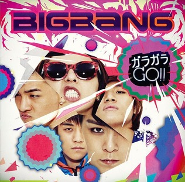
A high-energy Japanese single that marked a turning point in BIGBANG’s success in Japan.
Aug 19 2009
Big Bang
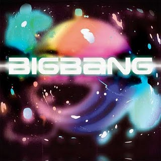
Focused on original Japanese tracks, helping them establish a stronger identity in Japan.
Mar 11 2010
Lollipop 2
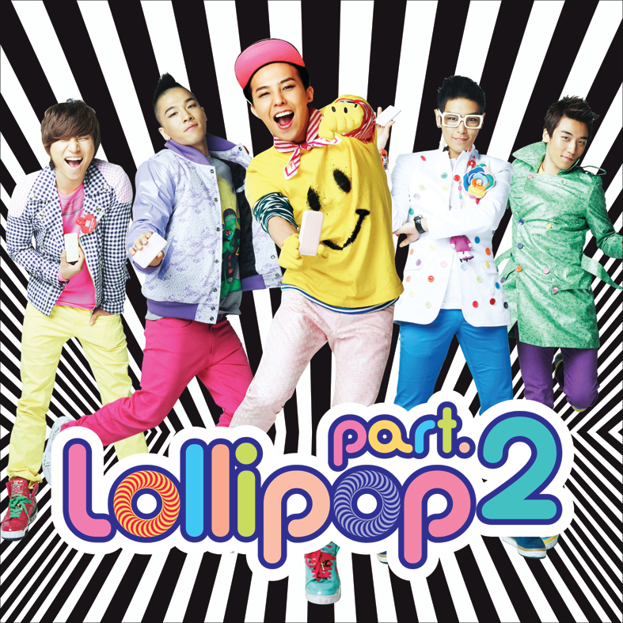
A bright electronic-pop collaboration between BIGBANG and 2NE1 created to promote the LG Electronics Cyon phone series. Compared to the original Lollipop, “Lollipop 2” had a more polished dance-pop sound and colorful futuristic visuals. It became very popular online and is remembered as one of the most iconic K-pop commercial collaborations of the late 2000s/early 2010s.
Aug 25 2010
Beautiful Hangover
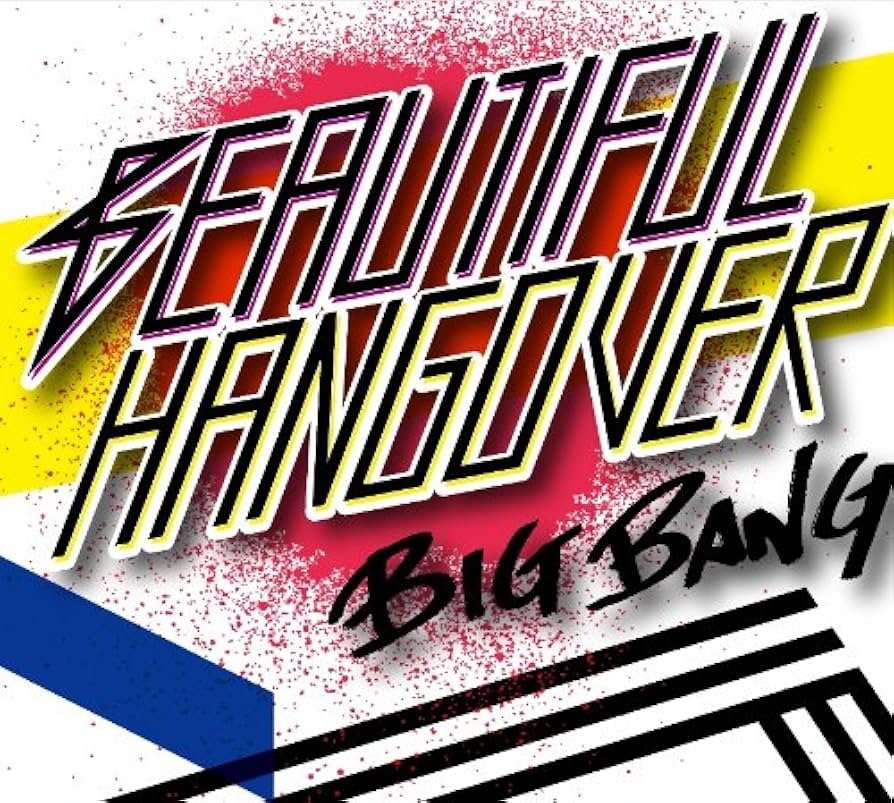
A stylish R&B-pop single with a more mature sound and sleek visuals.
Feb 24 2011
Tonight
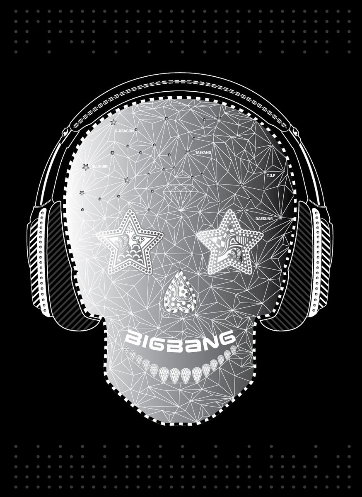
Their comeback after a long hiatus. It explored electronic dance music while keeping BIGBANG’s emotional style.
Apr 8 2011
Big Bang Special Edition
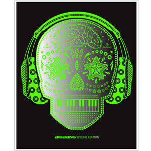
A repackage featuring fan-favorite songs like Love Song and Stupid Liar.
Feb 29 2012
Alive
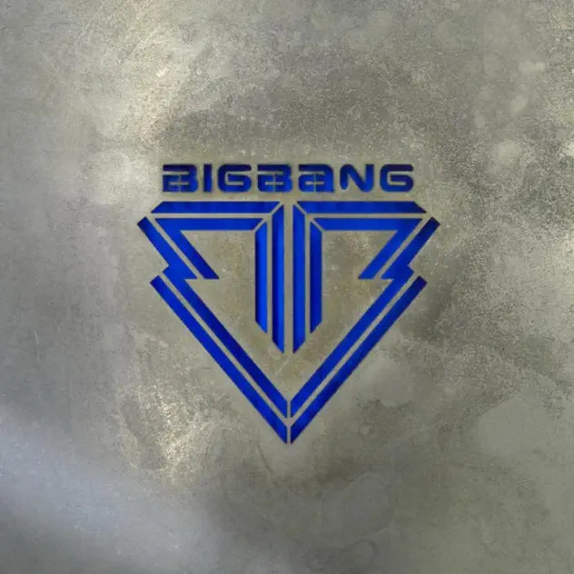
One of the biggest K-pop releases ever. Included Fantastic Baby, which became a global K-pop anthem.
Jun 3 2012
Still Alive
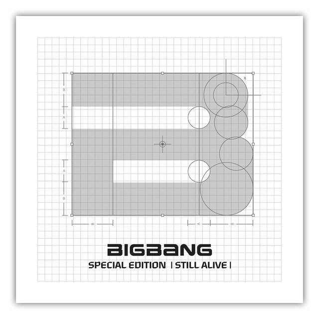
A repackage featuring Monster, known for its darker concept and emotional vocals.
May 1 2015
M
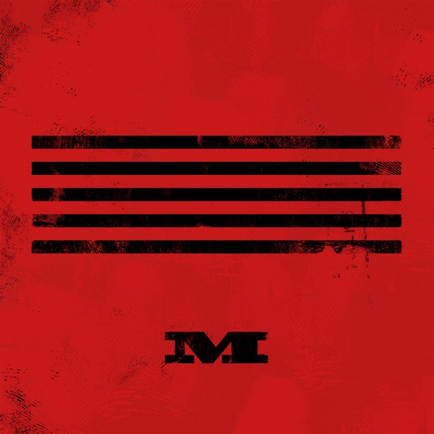
Started the MADE project with Loser and Bae Bae. It showed a more emotional and artistic side.
Jun 1 2015
A
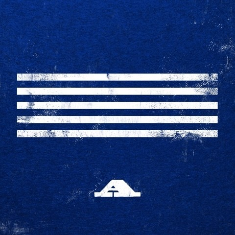
Included the explosive party anthem Bang Bang Bang and the fun summer track We Like 2 Party.
Jul 1 2015
D
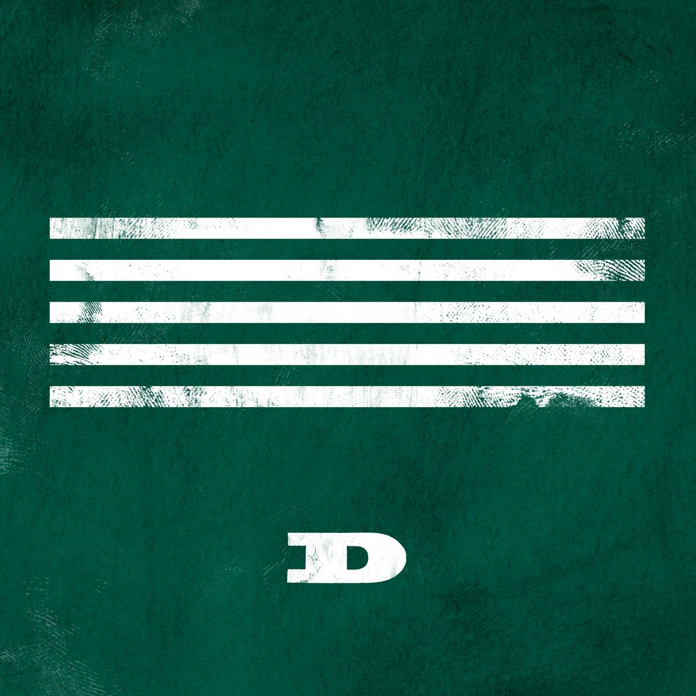
Focused on emotional contrast with the rock-inspired Sober and ballad If You.
Aug 5 2015
E
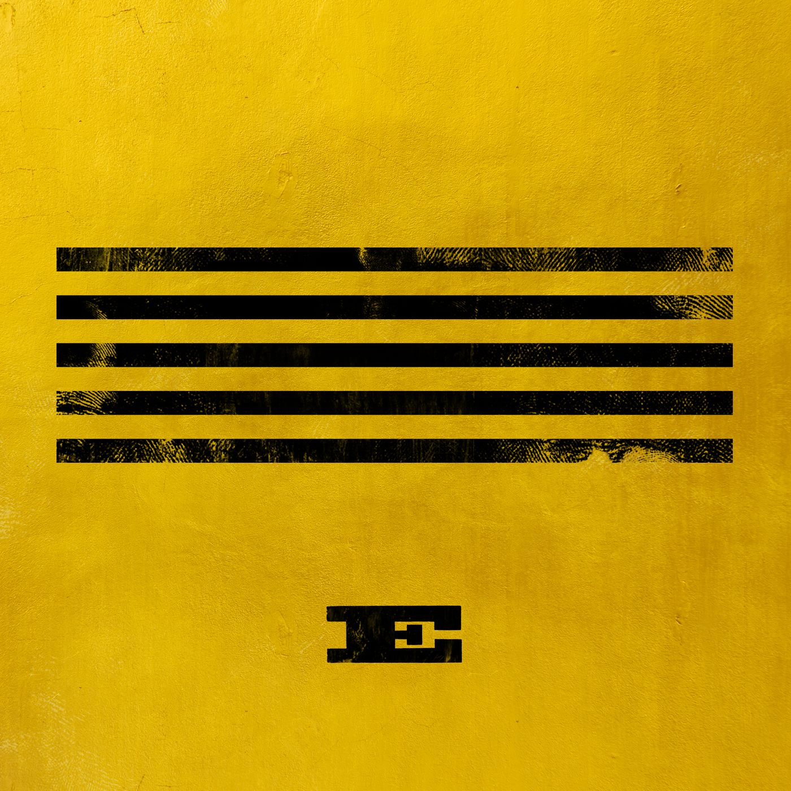
Featured Let's Not Fall in Love and the GD&TOP subunit track Zutter.
Feb 3 2016
MADE
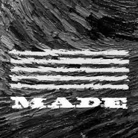
The completed MADE album collected all singles plus new tracks like Fxxk It and Last Dance. Often considered their defining album.
Mar 13 2018
Flower Road
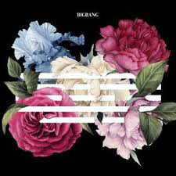
A farewell-style single released before the members’ military enlistments. Emotional and nostalgic in tone.
Apr 5 2022
Still Life
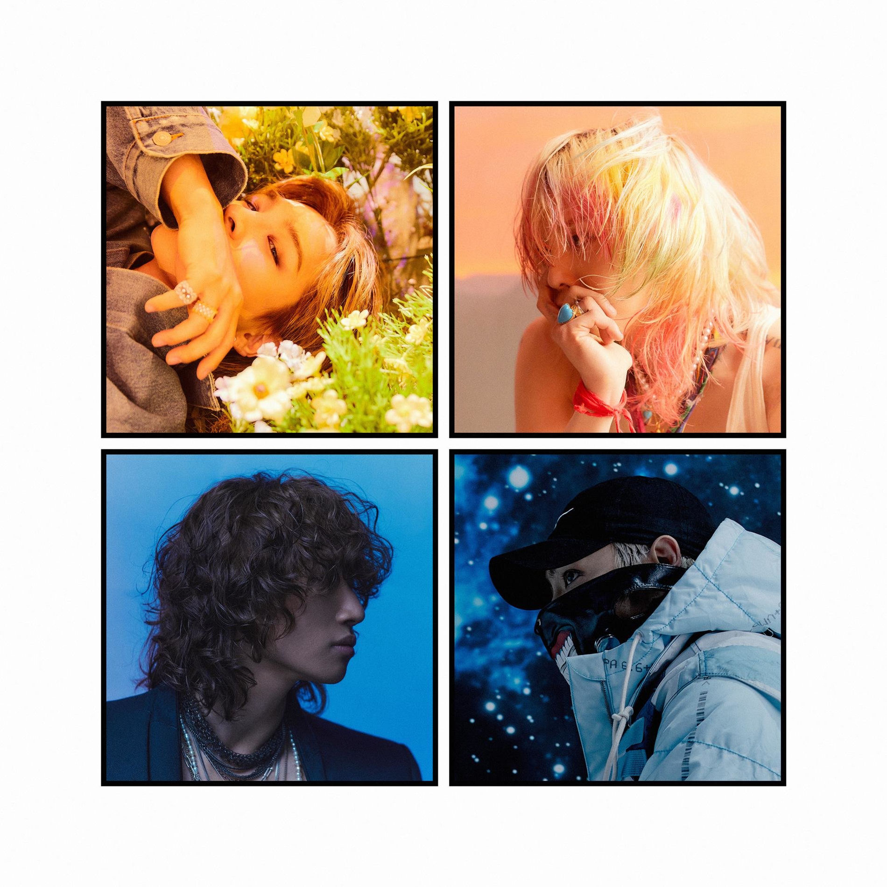
A reflective comeback single about growing older, memories, and change. It marked BIGBANG’s first group release in four years.